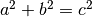

Since Pythagoras, we know that .
# Hier kommt Code
1 2 3 4 5 6 7 | #include <stdio.h>
int main (){
std::cout << " Das ist ein besonders langer Text. Es soll pruefen wie die Quellcode im Browser und im pdf angezeigt wird. Ob es umbricht oder nicht." std::endl;
return 0;
}
|
<a href=”google.de”>Link</a>